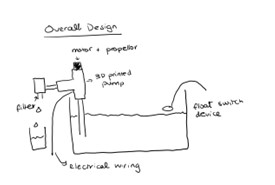
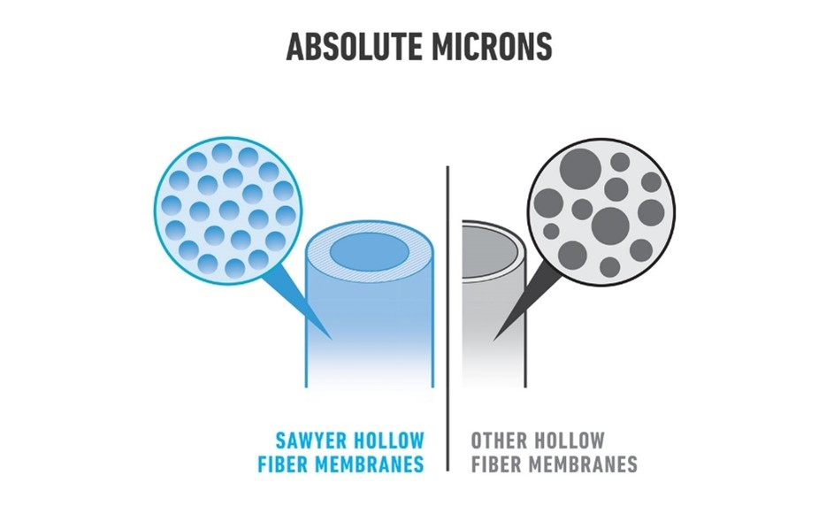
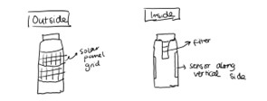

Project Proposal
<br>
Objective
To build a fully functioning and sustainable water system that could theoretically pump and purify clean drinking water from a groundwater well. This system would include: a water pump, a filter to purify the water, and a float switch that would turn off the pump if it detected water levels that were too low in order to avoid drying out the well.
Why:
Many water systems costs thousands of dollars for material alone (especially the water pump), let alone costs for labor, transportation of materials and any maintenance or damage costs. My goal is to evaluate whether I can create the same system using only items and skills from this course, thereby reducing the cost of these water systems significantly and making them much more feasible in poorer rural communities.
Overall Design of system
<div class = "center">

</div>
Part 1: The water pump
According to [this](https://www.wikihow.com/Build-a-Water-Pump) wikihow article, a water pump can be constructed quite easily using PVC piping, a t-socket, a metal sheet, a motor, some plastic and a 12V battery pack. I believe that this same design can be mimicked and elevated in the PS 70 lab.
Firstly, instead of using PVC piping I would like to investigate the possibility of 3D printing the exact shape required for the pump, including specific placeholders for the motor and wiring. Additionally I would like to use laser cutting to create a more exact motor, and use more realistic material such as cast steel or bronze for the propellor portion of the motor.
Finally, after learning more about electronic circuits throughout the class, I would like to reevaluate the use of the 12V battery pack to determine whether there is a more efficient way to supply power. I am unsure whether this is too ambitious but ideally, I would like my system to run off of a mini solar grid or another form of renewable energy to avoid wasting batteries and mimic the needs of communities that are off-the grid.
Part 2: The water filter
While the majority of water filters are placed in the homes of communities rather than connected directly to the water pumped from the well, I would like to include this element in my water pump project. I believe this is an important consideration to the design in the case that the community cannot afford enough piping to lead to each individual house, and rather must collect directly from the well.
I have considered both the possibilities of 3D printing and using molds to create the base water filter, and I am unsure which would be more suitable at the moment with my limited knowledge. I would also like to investigate the use of activated carbon in my filters, and how I could maximize the use of tools to produce this activate carbon in-house. Normally, activated carbon is made by “being placed in a tank without oxygen and subjecting it to extremely high temperatures, 600-900 degrees Celsius .” so I am unsure if there is a feasible, safe way to reproduce this in the lab.
Finally, there are numerous reports detailing “DIY” wilderness filters using a mixture of sand, gravel, and cloth to natural filter out the water. I would like to investigate ways in which I can substitute these materials for more efficient, yet still cost-effective materials. The goal would be to get as close to “real” or commercially sold water filters, such as the sawyers water filtration kit (shown below):
<div class = "center">

</div>
These filters are comprised of tiny hollow fiber membranes which allow water to enter through micropores but helps filter out 99.9% of bacteria and 100% of microplastics.
Part 3: Float switch
The final component to my planned water system would be to program and design a float switch. The float switch would directly turn off the pump when water levels dropped below a pre-determined safety level. This would help the well from running dry, as well as preventing any damage to the pump.
In order to create a float switch from scratch I would need to incorporate multiple different factors. Firstly, I will need to incorporate the necessary Computer Programming to allow the float switch to carry out its desired function. Secondly, I will need to design a way in which the float switch sensor can be connected to my code and relay the monitoring information. I would like to explore whether it would be possible to do this through Bluetooth rather than the traditional electrical wiring. Another potential possibility would be to incorporate microcontrollers into the operation of my float switch, as this site demonstrates.
Part 4: Electrical Wiring
In order to evaluate and improve my water pump system, as well as connect my float switch as a monitoring device, I will need a sound understanding of both electronic input and output systems.
Other considerations and ideas:
While creating a holistic water system is my preferred project, I recognize that this may involve too many different working parts. As an alternative to my main idea, I would also like to present the photovoltaic water filtration water bottle system.
This device would involve an internal filter containing activated carbon and other processes. The solar panel element would be used to monitor the water to ensure that it is being purified to a level that is safe for drinking. An Arduino water sensor could be incorporated to measure certain factors of the water such as pH, turbidity, temperature, etc. this Arduino would then be connected to the external solar panels placed on the outside of the water bottle so that this monitoring system would not require external energy sources. Finally, I would like to find a way to incorporate Bluetooth for transfer of this monitoring data to a csv. file.
I would like to investigate whether I could make the panels from scratch as well but this may be completely out of scope and require a unrealistically in depth understanding of photovoltaics.
<div class = "center">

</div>